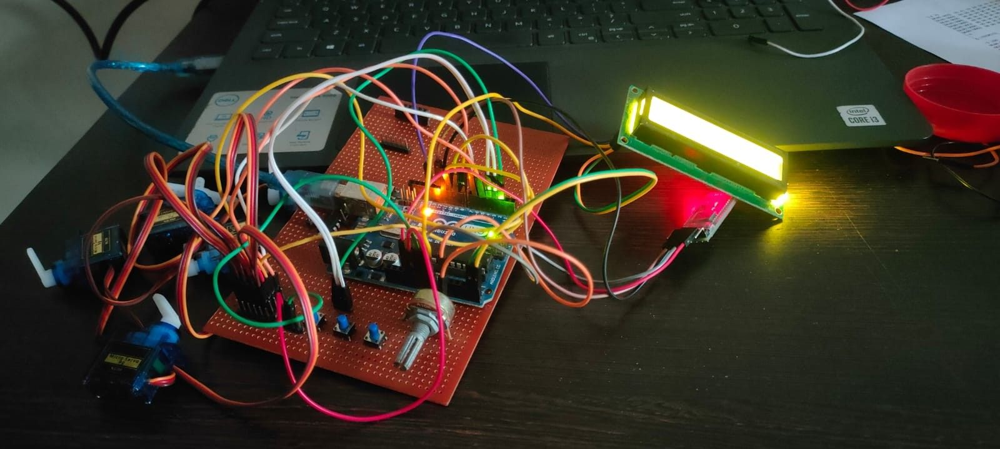

Braille Bot
Braille Bot is an assistive hardware project engineered to translate digital text strings into standard physical tactile Braille documentation using affordable mechanical infrastructure.
Project Overview
The system accepts text input from a computer and translates it into standard Braille patterns. A controlled mechanical printing mechanism then embosses the corresponding Braille dots onto paper with high accuracy. This automated workflow reduces manual effort and provides a practical solution for generating educational and informational material in Braille.

Problem Statement
Access to Braille printing solutions is often limited by the high cost of commercial embossers and specialized equipment. Educational institutions and individuals frequently face challenges in producing Braille content quickly and affordably. There is a need for a compact and cost-effective system capable of converting digital text into physical Braille documents.
Proposed Solution
Braille Bot combines text processing software with a precision-controlled electromechanical printing mechanism. The system automatically converts text into Braille encoding and controls the motion and embossing process required to generate tactile characters. This approach enables efficient Braille document production while maintaining accessibility and ease of use.
Key Features
- Automatic text-to-Braille conversion
- Precision Braille embossing mechanism
- Affordable and portable design
- Computer-based document input
- Support for educational and assistive applications
- Reduced cost compared to commercial Braille printers
Technologies Used
- Arduino-based embedded control system
- Stepper Motors and Motion Control
- Electromechanical Braille Embossing Mechanism
- Text-to-Braille Conversion Algorithms
- Serial Communication Interface
- Computer-Aided Control Software
Results & Achievements
Constructed a reliable prototyping model providing highly accurate cell formatting dot pitches, creating scalable learning opportunities at a fraction of standard commercial machinery expenses.